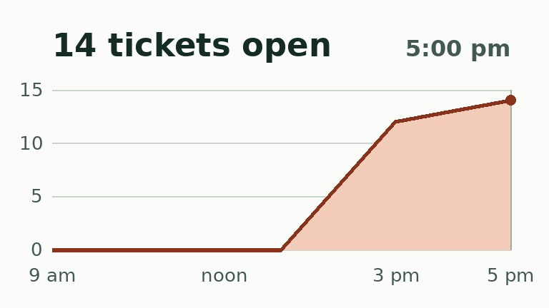
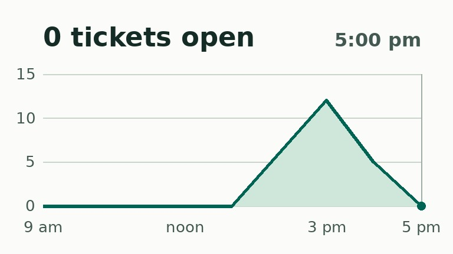

Two extra hours clear the busy-day queue
Both replays use the same 60 arrivals. Extra coverage starts at 3 pm.


At 5 pm
- Current staffing
- 14 open
- Two extra hours
- 0 open
What does extra coverage buy us?
Current coverage
46 closed14 carry over
With 2 extra hours
60 closed0 carry over
The model assumes 46 tickets at current staffing and 8 more per extra staff hour.
Approve a one-week staffing pilot
| Expected tickets | Extra coverage |
|---|---|
| 46 or fewer | None |
| 47–54 | 1 hour |
| 55–62 | 2 hours |
| 63 or more | Escalate to the queue lead |
Review the pilot Friday
The queue lead will track tickets left at 5 pm and extra staff hours used each day.